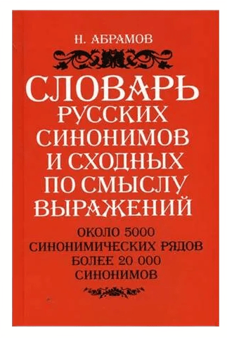
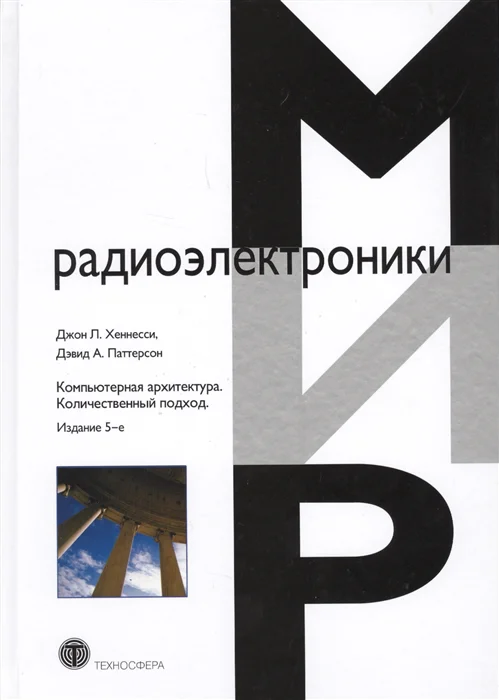
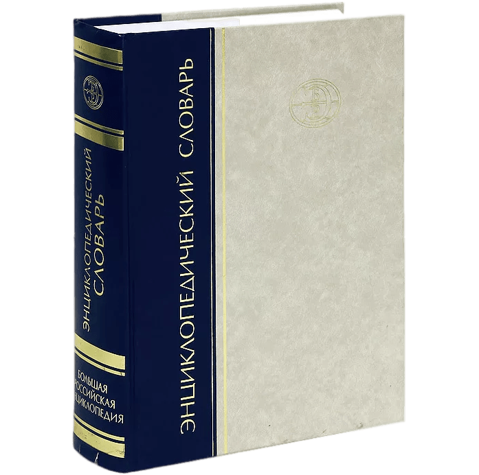

Страница выбора пользователей
Здесь будет предоставлена информация о том, какие книги выбрали пользователи, какие они советуют для прочтения и использования в будущем. Список составлен исключетельно из результатов выборов.
На данный момент раздел в разработке и на данной странице предоставлена первоначальная версия формирования рекомендательной системы
Список рекомендательной литературы:
Толковый словарь
Толковый словарь Даля
Толковый словарь Даля известен всему миру, так как он стал огромнейшим трудом русской филологии и лексикологии. Эта книга была создана Владимиром Ивановичем Далем практически полтора века назад, но актуальной она остаётся и до сих пор. Ценность «Толкового словаря живого великорусского языка» подчёркивается тем, что в нём можно найти значение не только десятков тысяч слов, но и в словарные статьи его помещено большое количество поговорок, загадок и пословиц.
Лингвистический словарь
Словарь синонимов Н. Абрамова
Словарь Н. Абрамова с исторической точки зрения является первым относительно полным сводом русских синонимов и до сих пор не потерял своей актуальности ни в отношении состава синонимических рядов, ни в отношении той концепции, которая была положена автором в основу словаря. Словарь предназначен как для специалистов, так и для широкого круга читателей.
Энциклопедия о компьютерах
Компьютерная архитектура. Количественный подход
«Компьютерная архитектура» написана во время бурного расцвета облачных технологий и посвящена принципам их работы. В ней рассматривается параллелизм уровня данных, раскрывая нюансы архитектур графических процессоров. Язык, которым написана книга, достаточно лёгкий — во всяком случае, авторы успешно доносят свою мысль до читателя.
Обычная энциклопедия
Большая российская энциклопедия
Большая российская энциклопедия — состоит из 35 нумерованных томов и тома «Россия», и содержит более 80 тысяч статей. Энциклопедия издавалась с 2004 по 2017 годы научным издательством «Большая российская энциклопедия».